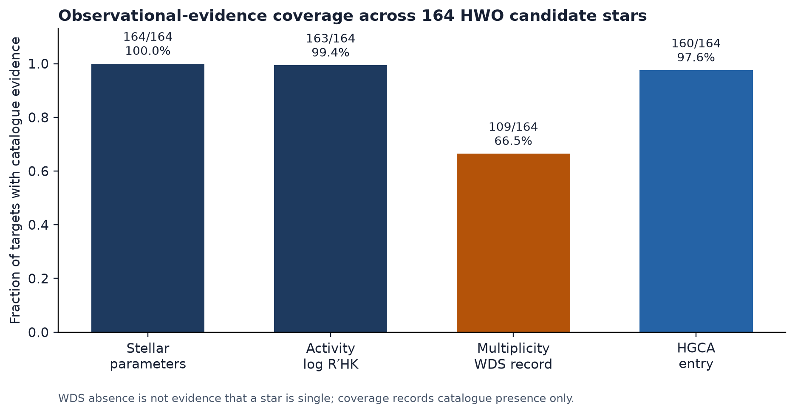
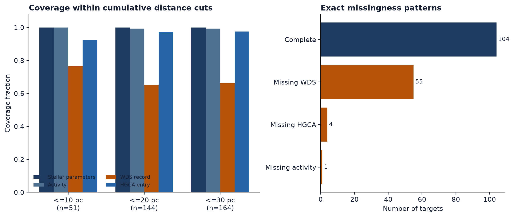

Data source notes
SHA-256, LF-normalised text
39d15d579d8a4955092c58c7e8d68d0d3563ebbd5b51e72bceced465296617eaBrowse 17 versioned evidence files. Table previews simply display stored rows. Consult the project report for the source, processing steps, and inference assumptions.


39d15d579d8a4955092c58c7e8d68d0d3563ebbd5b51e72bceced465296617ea4334b7b94390c8870b6b02a334f03920889e8eddbcdbd2f4cf27984c4a8667667100927f5a1cb0c83c0d65c853de370bfa46405f407516024a13e36fcf709c3dff60a6d03ab533f0507cddcc06b951f209b3cbe1bf1d2b11e1d046494988d4e9034f2b7a6fc7b42829d43442932e216040d2cd425d7d0808758b09d5afb944663730718c8bf0d7c775170aadebb891b98f46596f1f153c73f7b8894b54b34667ba4cd8ce3fb5c1b0d21b8a473f54897793a7b4fb126b3c6180c1fe3ec54f0d39| category | description | n_present | n_total | fraction_present |
|---|---|---|---|---|
| stellar_parameters | Teff, mass, radius, and logg all measured (NASA Exoplanet Archive) | 164 | 164 | 1.0 |
| activity | Chromospheric activity index log(R'HK) measured | 163 | 164 | 0.9939024390243902 |
| multiplicity | Washington Double Star catalog cross-match exists (presence of a record, not a Y/N single-star determination) | 109 | 164 | 0.6646341463414634 |
| astrometric_acceleration | Star has a Hipparcos-Gaia Catalog of Accelerations (HGCA) entry | 160 | 164 | 0.975609756097561 |
cd4bbc855288839fb9a140cfdf0930e9ad16c8bba87012137b298ee17fb5ebee67e0e99bfe7691d281ea8eb296a941ef749bf1f4c1b286c3c131d2e7e067b64e| distance_stratum | max_distance_pc | n_targets | stellar_parameters_fraction | activity_fraction | multiplicity_fraction | astrometric_acceleration_fraction |
|---|---|---|---|---|---|---|
| <=10 pc | 10.0 | 51 | 1.0 | 1.0 | 0.7647058823529411 | 0.9215686274509803 |
| <=20 pc | 20.0 | 144 | 1.0 | 0.9930555555555556 | 0.6527777777777778 | 0.9722222222222222 |
| <=30 pc | 30.0 | 164 | 1.0 | 0.9939024390243902 | 0.6646341463414634 | 0.975609756097561 |
| all | 164 | 1.0 | 0.9939024390243902 | 0.6646341463414634 | 0.975609756097561 |
b7dd1f69c2452f193780707471558302c0333f2abebd05dcdecc4ee06d24a786| target_id | hip_name | hd_name | hip_number | sy_dist | sy_planets_flag | sy_disks_flag |
|---|---|---|---|---|---|---|
| hwo-d8db80e6c268807f | HIP 41926 | HD 72673 | 41926 | 12.1643 | N | N |
| hwo-c03957d64b1f36cb | HIP 42438 | HD 72905 | 42438 | 14.4388 | N | Y |
| hwo-f9b0865dbe4ced35 | HIP 42808 | HD 74576 | 42808 | 11.1917 | N | N |
| hwo-db19849dc3237a1e | HIP 43587 | HD 75732 A | 43587 | 12.5868 | Y | N |
4b6edc88cefa993beebb3d5d4d2be7ee1a2914f968dd181ac5d102a22cdde634| target_id | hip_name | hd_name | sy_planets_flag | hgca_chi2 | hgca_accel_pvalue | hgca_accel_qvalue |
|---|---|---|---|---|---|---|
| hwo-35fdd019731e3ea2 | HIP 72659 | HD 131156 A | N | 11500.0 | 0.0 | 0.0 |
| hwo-a94c754468553e12 | HIP 77052 | HD 140538 A | N | 4965.0 | 0.0 | 0.0 |
| hwo-9e40bdd178f8293f | HIP 72659 | HD 131156 B | N | 11500.0 | 0.0 | 0.0 |
| hwo-7b2e6dbe6d799ac7 | HIP 12843 | HD 17206 | N | 4366.0 | 0.0 | 0.0 |
a0e5bf882fa5ad9120cee211516319b95ebf238af64948ed23698fb57d686219| stellar_parameters | activity | multiplicity | astrometric_acceleration | n_targets | fraction_targets | n_categories_present |
|---|---|---|---|---|---|---|
| True | True | True | True | 104 | 0.6341463414634146 | 4 |
| True | True | False | True | 55 | 0.3353658536585366 | 3 |
| True | True | True | False | 4 | 0.024390243902439025 | 3 |
| True | False | True | True | 1 | 0.006097560975609756 | 3 |
f5e0f704c66f9c038789b1a479c0bc89d1b2ed7bbb0e90724aab0caac1346e63c392df8f5e4fb43c7db6b8983e2a6c41d0b51e17a407bbd36917fec9e5f67759ca83de804110b28917ba58df2ec6c0a8c091fb6978d9449e537d193ff8c5c33551ed0e825835c3762871d936de3dff9aea36a9422d86241027be204d70b77a3050217cf7c6cd05c6ac1a5cc1f10303bbcc44a4618ca7c39331c65d2d88037e10SHA-256 values verify the stored files. They do not independently validate the scientific analysis. Rebuild this page with python scripts/evidence_catalog.py followed by python scripts/render_evidence_page.py.